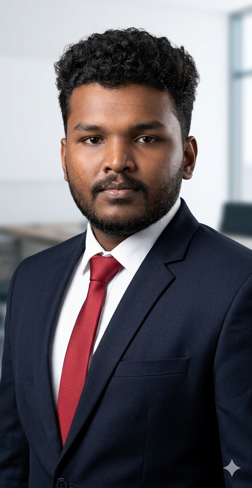
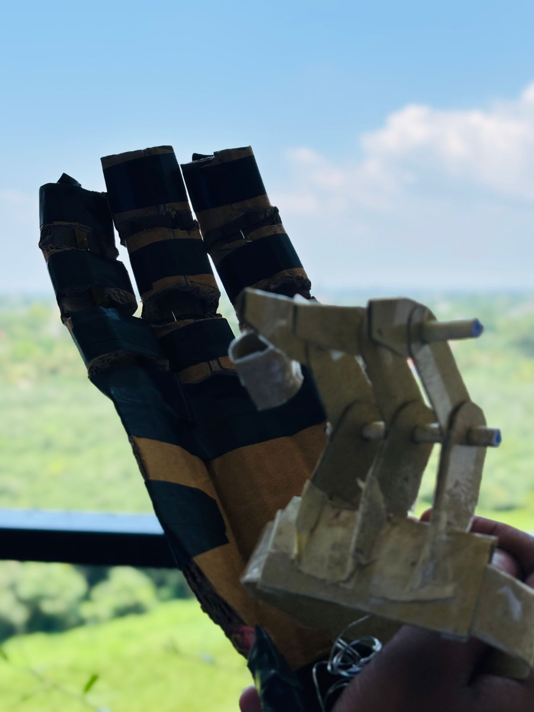
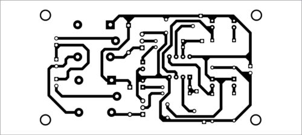
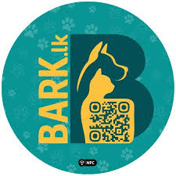

Faculty of Computing & Technology | University of Kelaniya
Second-year Undergraduate of University of Kelaniya.
Passionate about building interactive 3D experiences, game mechanics, and cybersecurity solutions for digital communities.
I'm a beginner and So far i created some 3D rigs using Blender.

I'm an Undergraduate of Bachelors of Information and Computing Technology at the University of Kelaniya.
I done my O/L in Mederigama National College and A/L in the Bio System Technology Stream at Pinnawala Central Collage in 2023.
My mission is to specialize in Gaming and Animation and become a creative and skilled game developer.
I'm learning continuously to expand my knowledge and gain experience in designing,innovation games that deliver better user experience.
Creative
Continuous Learning
Innovation
Quality and Excellence
Problem solving
Module: GTEC 12033 - Fundamental Practices in Technology
Object: Prosthetic arm designed for a stakeholder who lost three fingers (index, middle, and ring). Enables gripping objects and typing functionality.
Designed by me using low-cost, accessible materials.
My role: Project Manager.

Module: GTEC 21023 - Fundamentals of Electronics
Tech: Custom PCB, ATmega328P (bare chip), IR sensors, motor driver circuit
Line following robot built on a custom-designed PCB.
My role: schematic design, PCB layout (KiCad), build PCB , and embedded firmware.

Module: GTEC 13032 - Projects In Technology - I
Tech: Mobile App, QR Code Scanner, Local Database (SQL)
Pet tracking system using QR codes on collars. When scanned via app, owner contact info is displayed.
My role:app development and database integration.

Module: GTEC 23032 - Projects in Technology - II
Status: 🔄 Ongoing Project (not finished yet)
Tech: Raspberry Pi, YOLO, OpenCV, Kaggle Dataset, Camera Module
Portable system to detect road violations — specifically no helmet and no seatbelt using real-time object detection camera.
Trained on Kaggle datasets with YOLOv11.
This project helped me to understand importance of the user-centered design in assitive technology.
I learned how to transfer the human needed into functional prototype using simple and low-cost materials.It Also improved my skills in mechanical design and problem solving under constraints.
Through this project i gained hands on experience in PCB design and embedded system development.
Designing my OWn circuit using KiCad and implementing firmware on an ATMega328P helped me to understand the complete hardware and software intergration process.It also improved my debugging skills and strengthened in building real-world electronic systems from scratch.
This project helped me to understand mobile application development and database integration.
I learned how QR-based systems can be used to solve real-life problems efficiently. Working with Flutter and SQL improved my full-stack development thinking and taught me how to design user-friendly and practical solutions for everyday issues.
This ongoing project is helping me explore the field of computer vision and AI-based detection systems. Working with YOLO and OpenCV has improved my understanding of real-time object detection and model training. It has also strengthened my skills in Python, dataset handling, and deploying AI models on hardware like Raspberry Pi.
I aim to complete my degree specializing in Gaming and Animation on time while actively building industry-ready skills. I am currently focusing on 3D modeling and game design, and improving my proficiency with professional tools such as Blender and Unreal Engine 5. My short-term goal is to strengthen my practical experience by developing projects that align with real industry standards.
My long-term goal is to become a Lead Animator or Game Designer in a creative studio, where I can design memorable characters and build engaging game experiences. I aim to combine my technical background in computing and embedded systems with creativity in animation and interactive design to develop unique and impactful games.